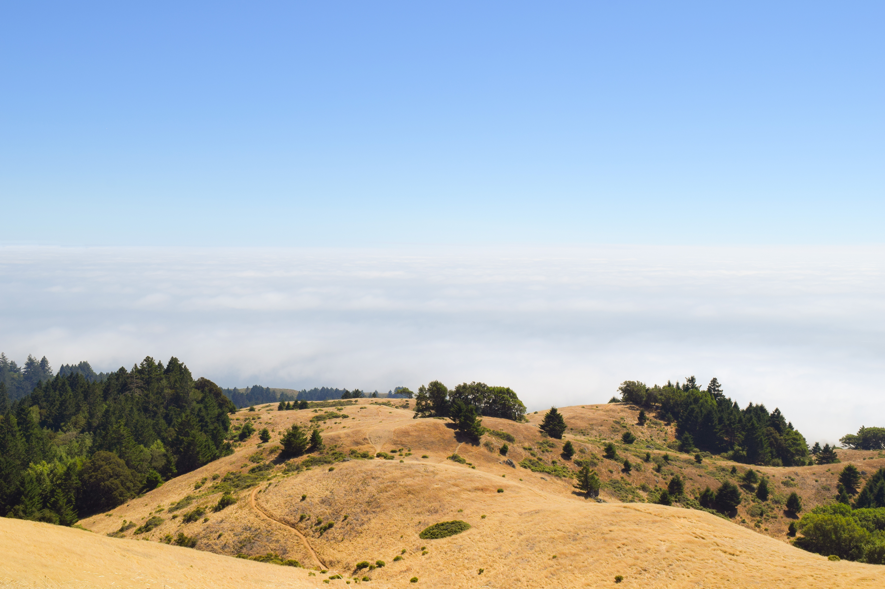

Looking to the right, we got to witness the beautiful rolling hills expanding
to the clouds. This is one of my favorite photos I have ever taken. It was so
peaceful there with no one around, being surrounded by
nature
.
